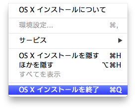
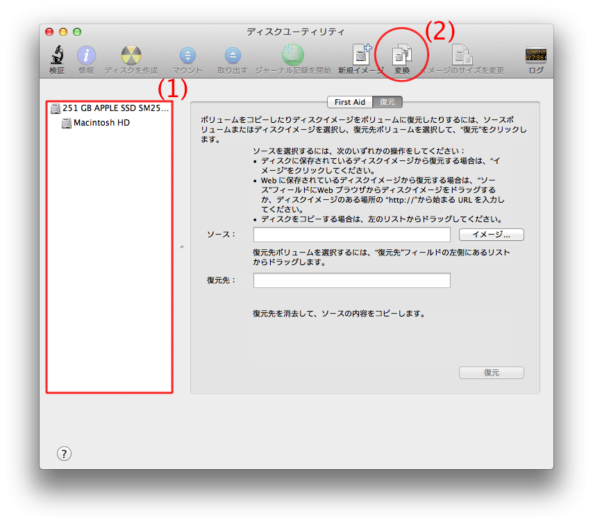
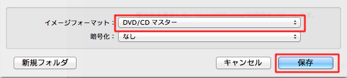
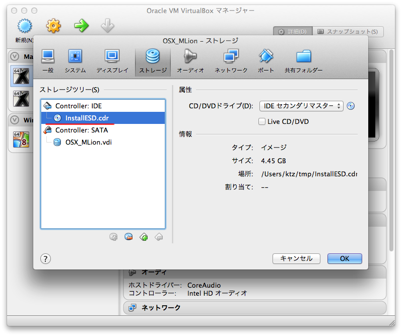
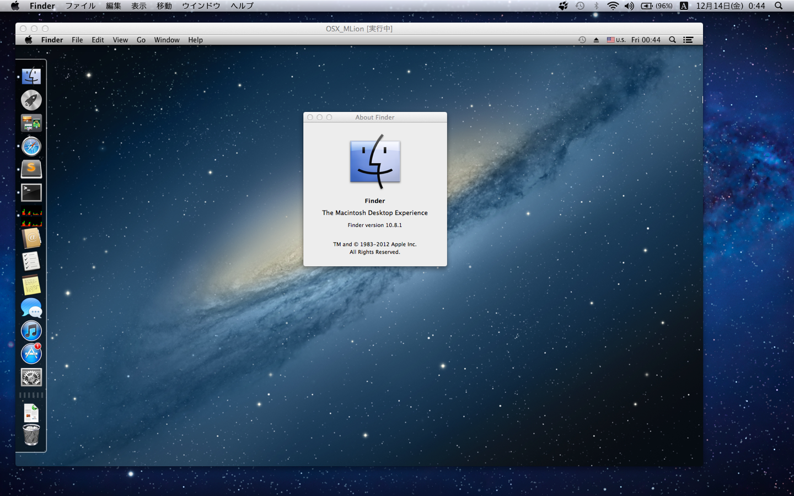
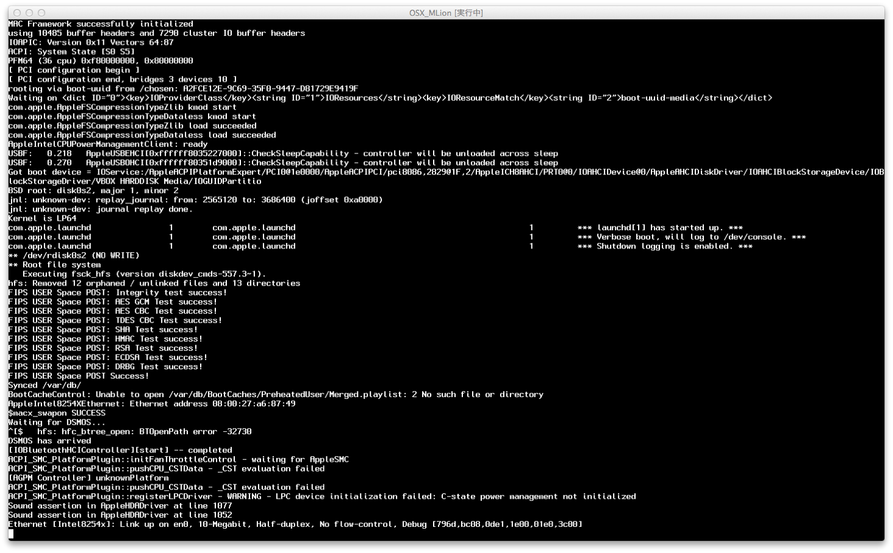

（みんなには内緒だよ）
これは『HENTAI Advent Calendar 2012 - 変態アドベントカレンダー』の記事です。

前日（16日目）はs_kozake さんの「変態ルーレット2.0」でした。
VirtualBoxではサポートされていない、Moac OS X Mountain LionをHackintosh (Hackロム)等に頼ること無くインストールできたので、こっそり後悔します。
実際にやったのはひと月前なので、その時の記憶をもとにお送りいたします（再度インストールするのがメンドイから）
前提
- VirtualBoxは、その時点で最新のバージョンをインストールしておく
- 入れた当時は、v4.2.x
手順
インストーラをダウンロードする
1. App StoreからMountain Lionを購入（ちゃんと購入しましょう）。

2. 自動的にインストーラが起動したら、メニューから「OS X インストールを終了」を選び、即終了させる

ディスクイメージ抽出
3. アプリケーションフォルダにインストーラがいるはずなので探し出す
- コンテキストメニューの「パッケージの内容を表示」を選び中に入る。
- Contents/SharedSupport/InstallESD.dmg があることを確認する。
4. ディスクユーティリティを起動する

- (1)の欄にInstallESD.dmgをD&D
(1)の欄にInstallESD.dmgを選択し、(2)「変換」を押す。
変換先のフォーマットをDVD / CDマスターにし、どっか適当なところに保存する。

- 変換待つ・・・
インストール作業
5. VirtualBoxの仮想マシンを追加

タイプ：Mac OS X
バージョン：Mac OS X (64 bit)
- 以降は通常通りすすめて作成する
- 作成したVMの設定を開き、ストレージのCD /DVDに4.で作成したディスクイメージを指定する。

6. VMを実行する
（ごめんね、画像無くて）
- 再セットアップが開始する（結構時間かかる）
VM内のディスクユーティリティを起動し、パーティションをフォーマットする（不要かもしれない）
- Mac OS 拡張（ジャーナリング）、GUIDパーティションテーブルを選ぶこと
ディスクユーティリティ終了→インストールアプリ起動
設問に従ってポチポチ
インストール始まる。
最後までいくと自動的に再起動する。
完了かと思いきや、インストールがおこなわれてる。
２ループ目は不明だったので、静観してたけど、３ループ目も同じように進もうとしたため、VMを強制停止する（ウインドウ閉じればアラートでる）
たぶんリカバリインストールが始まってたぽい気がする。
7. VMの設定を開きCD / DVDをアンマウントする
8. 再度、VMを実行する
インストールプロセスの続きが実行された。
言語とかネットワーク設定とか聞いてきたような気がするけど、必須入力以外はすべてスキップしたような（もう覚えてない）
VirtualBoxの関係上なのか、英語版にされる。

そのた、雑多なこと
- こんな起動の裏側が見れるよ。

当方、Sanday BridgeのMacBookAir 13''松特盛りですが、起動に５分ぐらいかかります。気長に待ちましょう。
２本指スクロール
はじめ効かないかと思ったけどSnow Leopard基準なので、Mountain Lionと逆なだけでした。
- 放置しておくと、結構な頻度でフリーズ状態になります。しょうがないね。
まとめ
変態 というよりは、どう見ても、真っクロに限りなく近いクロです。どうもあ（ry
明日(18日目)はnyaartoさんです。